SILENT
BUILD‑UP
The Silent
Build‑Up
Black History · Unreal Engine 5 · Motion Capture · VFX
— PROJECT
The Silent Build-Up
Senior Capstone
— ROLE
Director
3D Animator
Motion Designer
VFX Artist
— INSTITUTION
New York University
Integrated Design & Media
— DATE
May 2026
The Silent Build-Up is a senior capstone project exploring Black history through immersive cinematic storytelling. My main goal is to convey the passage of time and how history is repackaged in the context of African Americans; illustrating how Black history is not just a series of past events, but a lived experience that constantly overlaps with the present, stretching from the Transatlantic Slave Trade to the Civil Rights Movement and the current time period under the Trump Administration.
There might be some confusion around the use of the audio narration due to Rudyard Kipling's racist beliefs. The author was referencing the toil of British soldiers invading South Africa. I believe the audio is quite hypocritical in that sense who manufactured this war, and why should sympathy lie with the colonizer sending men to enforce colonialism? I aimed to take the audio, which many people have not dug into deeply, and twist it so that Rudyard Kipling's narration becomes the antagonist in the context of African Americans, along with symbolism represented through numbers used within the audio. This is a never-ending war that has silently built up, and yet again we are forced to fight.
Built in Unreal Engine 5, the project combines motion capture performance, MetaHuman characters, Adobe Substance Painter texturing, and environments to recreate history.
Each scene was built as a self-contained world, from found footage and archival art references to fully rigged 3D characters.
- Motion Capture → MotionBuilder Cleanup → Unreal Engine 5
- MetaHuman Creator → Facial Motion Capture → After Effects
- Adobe Substance Painter → Unreal Control Rig
- Adobe Illustrator → Compositing → FAB Assets
Plantation
Unreal Environment

In the opening plantation scene, I wanted a subtle way to represent the number 7. I decided to do this through the silhouette of a woman crouching, positioning her body so it actually forms the shape of the number. To bring the scene together, I arranged the environment and the cotton fields to frame the shot. I then rigged the 3D character in Mixamo to create the skeleton and refined the motion capture animations in MotionBuilder to get the movement.
Lashes — Back Scars
Unreal Environment — Autodesk Character Generator — Substance Painter
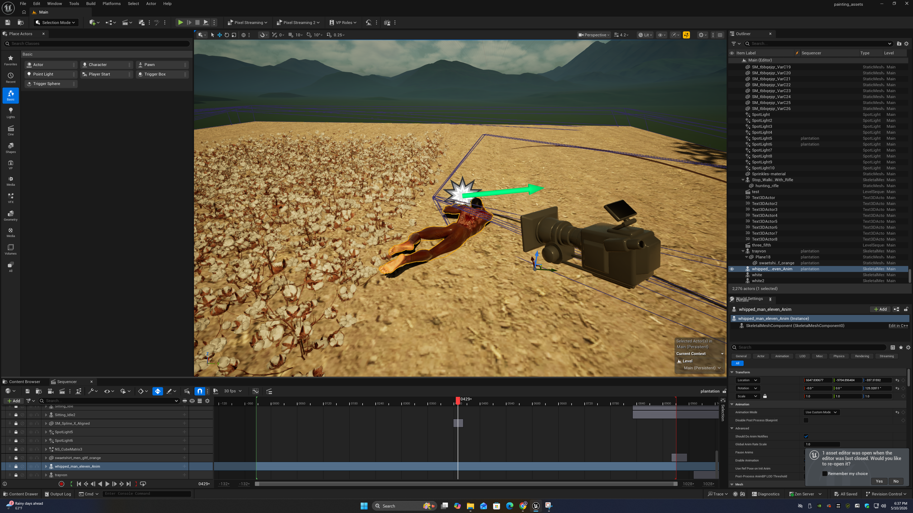
This character was created in Autodesk Character Generator and then repainted in Adobe Substance Painter to achieve a realistic depiction of scarring across the back . I believe it was important to have aspects of realism in the film to force the viewer to confront the realities of the torturous methods used towards enslaved Africans. In Rudyard Kipling narration I wanted to have the scars represent the number 11 to add another layer of symbolism to the scene.
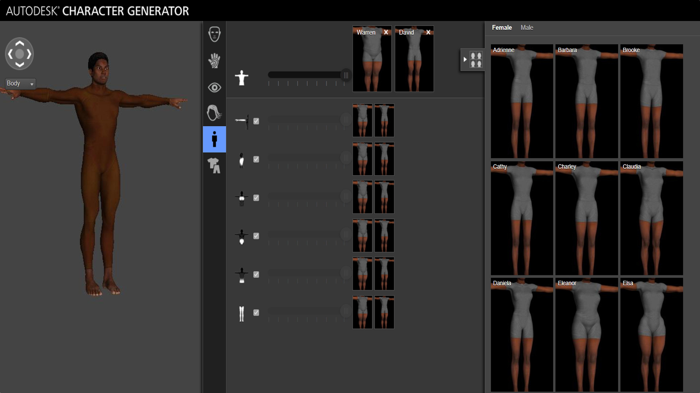
Autodesk Character Generator — Base Model
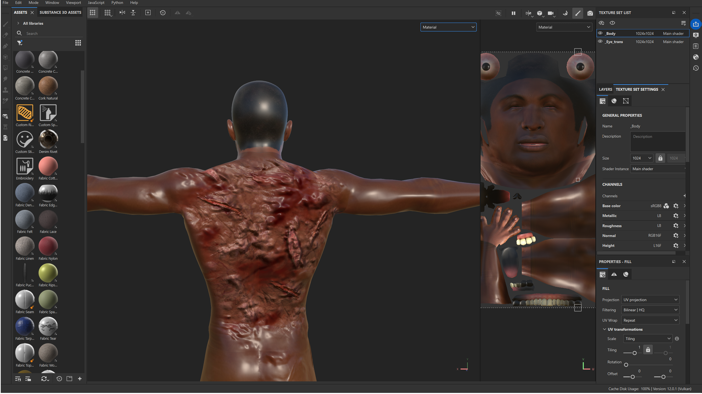
Substance Painter — Scar Material
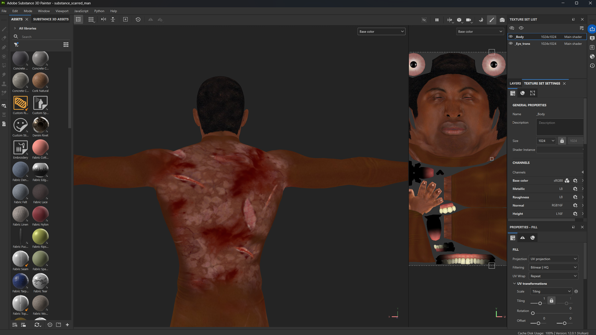
Substance Painter — Base Color Map
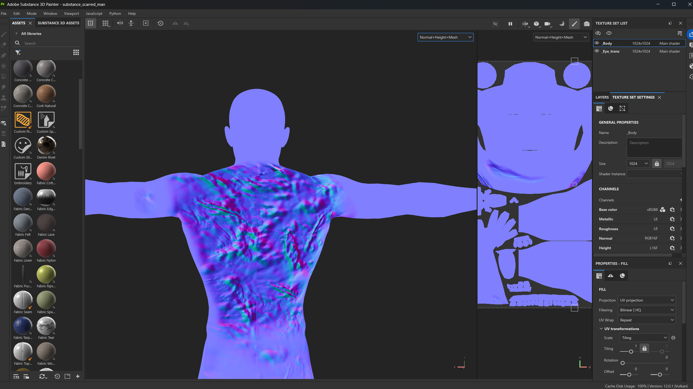
Substance Painter — Normal Map
The maps above were used to build the character's skin surface inside Adobe Substance Painter. The base model from Autodesk Character Generator provided the skeletal mesh and UV layout. The scar material was painted with the color map controlling the skin tone and colors of the wound across the body, with the normal map creating the texture and surface detail.
Transatlantic Slave Trade
Unreal Environment — VFX — Substance Painter
Sequencer Render — Unreal Engine 5
Asset Pipeline — Pre-Render Viewport
For the ship scene, the narration repeats, “Don’t, Don’t, Don’t , Don’t , Look at what’s in front of you . I aimed to show the barbaric conditions enacted on the millions of enslaved Africans transported to the Americas. The environment was built around a ship interior sourced through FAB. With motion capture, I acted out the movements and cleaned up the rigs in Motion Builder. An animated book prop was re-textured in Adobe Substance Painter to represent the Bible, showing the role religion played in forcing submission and brainwashing people as these atrocities occurred. The low ambient lighting and slow camera movement were designed to create a suffocating atmosphere that puts the viewer in that position. It’s important to remember that 400 years ago is not as long as you think; these were the experiences of many, and it’s important to visualize them. Within the scene, a man is badly beaten, a woman is thrown overboard, and a woman has her baby stripped from her arms with the assumption the child is being thrown overboard. As a man stares at the camera begging for help, the viewer is told by this white identity to ignore all of that and just look at the Bible.
Shackled Feet
Unreal Cinematic — Video — Texture Detail
Cinematic Video
Texture Pipeline — Substance Detail
For this scene, the visual is used to represent the "20 and odd" first enslaved Africans to arrive in Virginia. I gathered 20 models with motion capture animation and obtained a scan of bilboes, which I then attached to the models to recreate how inhumane and tight the transportation was.
Sexual Assault
Scene building — Facial Motion Capture
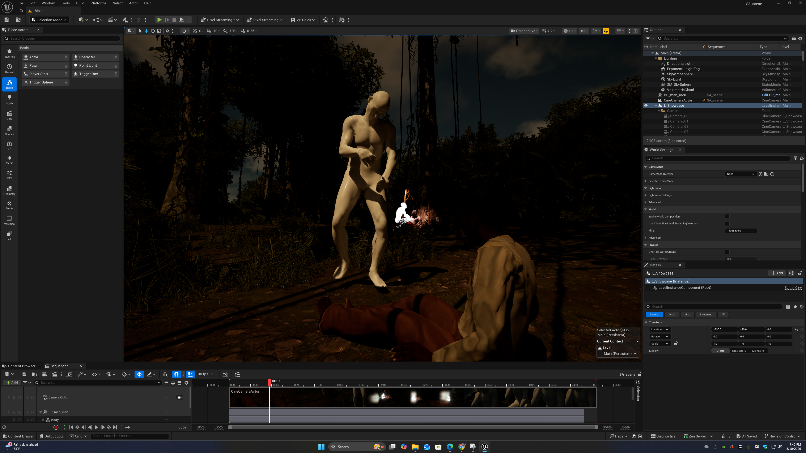
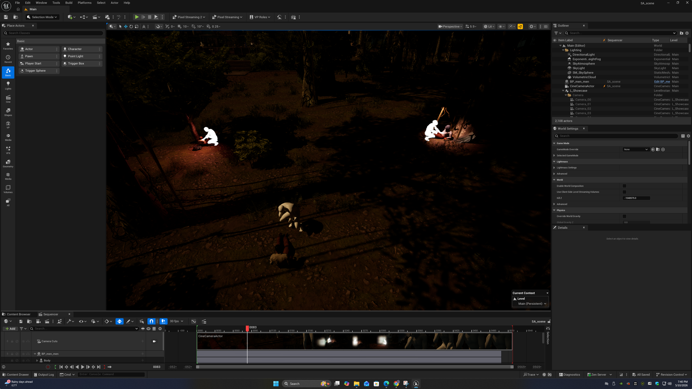
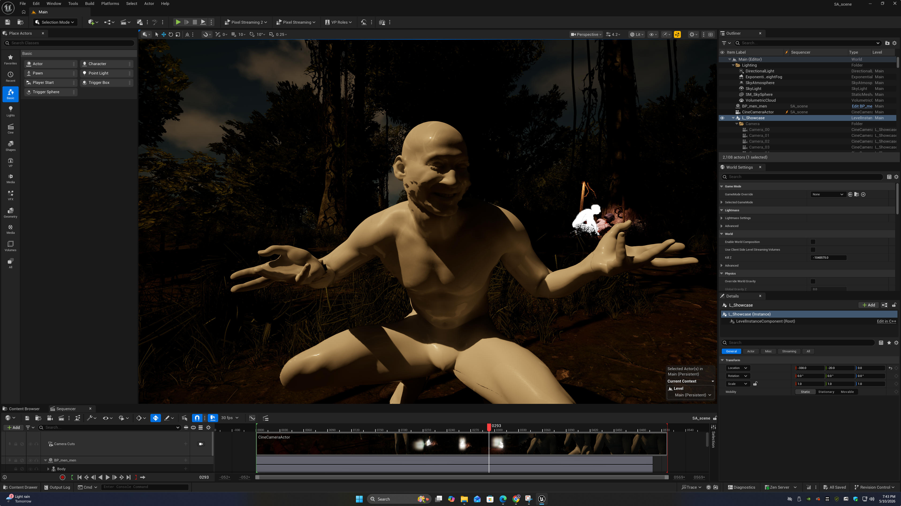
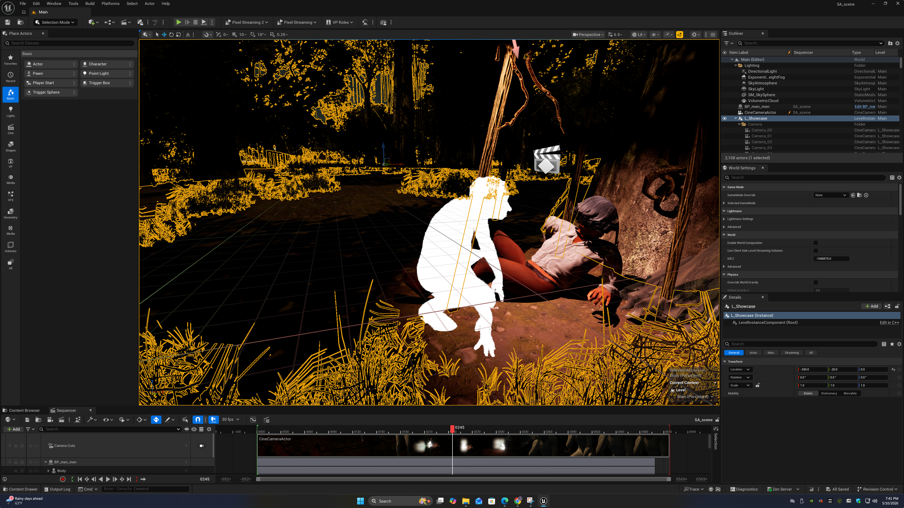
I felt it was very important to include this scene. Sexual assault was prevalent during slavery, regardless of age or gender. With the audio repeating, “Men go mad with watching them,” I aimed to put the viewer in a first-person perspective as a white, distorted figure moves through the passage of time, showing the twisted nature of these acts. I specifically controlled the lighting to create a hazy, unsettling atmosphere for the viewer. I included facial motion capture to also intensify the scene. I edited premade blueprints to achieve the warped look of the white figure.
Projected & Painted Assets
Unreal Environment — Substance Painter
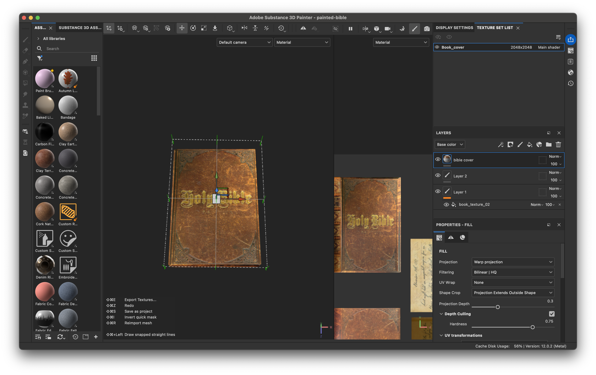
Bible Asset — Substance Painter Base
Several key props throughout the film were textured using Adobe Substance Painter's such as the Bible and boot assets. For the Bible a genuine bible image was projected onto an existing book animation to fit the scene.
Adobe Substance Painter — Boot Texture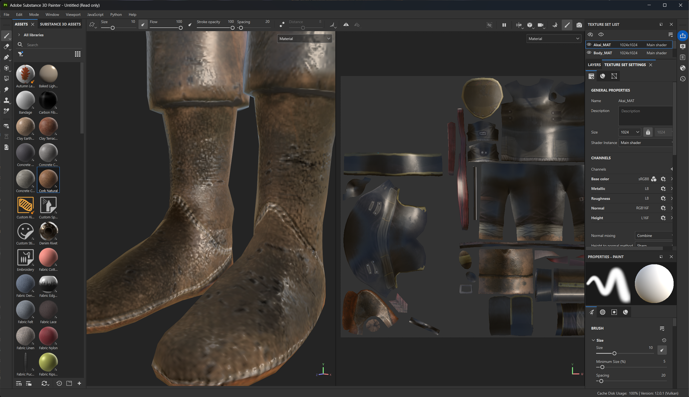
The boot was repainted from a Mixamo model and brought into Substance Painter to recreate early 1600s boots worn by colonizers. The surface uses a combination of a dirt/grime smart material applied to the crevices and sole seams, and a hand-painted scuff layer across the toe cap and heel where wear would naturally accumulate. The stitching detail was achieved using a stitching material in Substance Painter.
Boots Asset — Substance Painter
Mass Incarceration
Unreal Environment
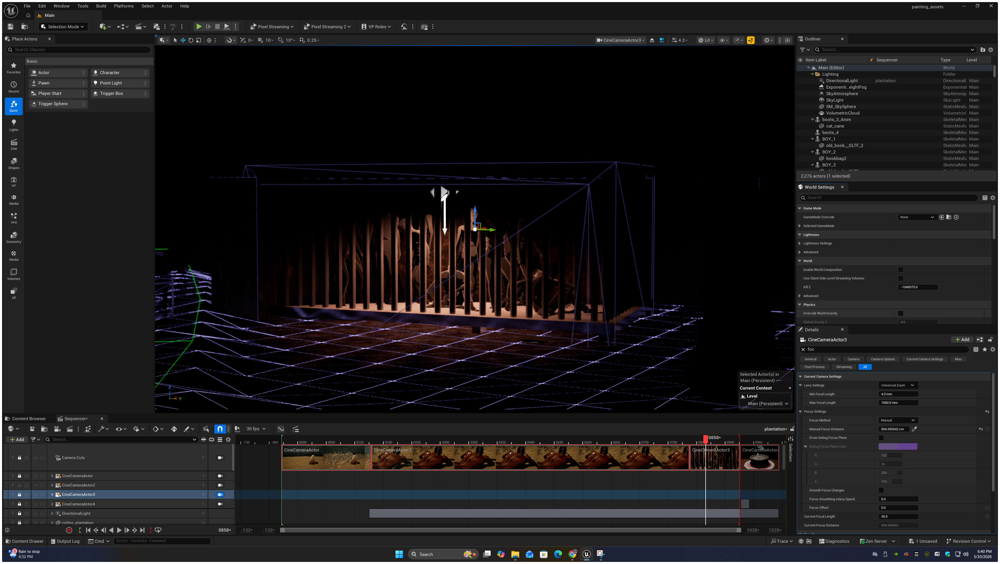
This scene was used to represent mass incarceration, with African Americans being incarcerated at 5 times the rate of white people. The bars were used to represent the number 11 in the narration by matching the shape of the number.
Little Rock Nine
Unreal Environment — Substance Painter ×2 — Newspaper — 9 Art References
For this section, I decided to reference art through the clothing of the Little Rock Nine, who were the first African American students to attend desegregated classes at Little Rock Central High School. You can see mobs of white silhouettes gathering around the children reflecting history.
Scene Video — LR9 Alabama Bombing
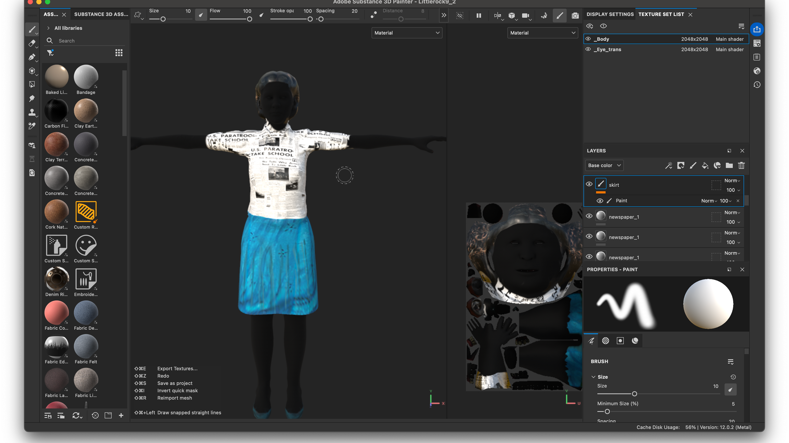
Substance Texture 01 — Female Student
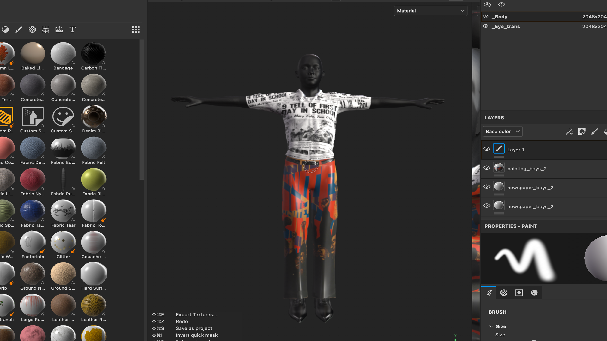
Substance Texture 02 — Male Student
Original Art References — 9 Paintings — Scroll to view →

AlstonWalking, 1958

Annie LeeBlue Monday

Jones-HoguUnite

Faith RinggoldDie

Norman RockwellThe Problem We All Live With

HollingsworthTrapped

Wadsworth JarrellLiberation Soldiers, 1972

Jacob LawrenceSoldiers & Students, 1962
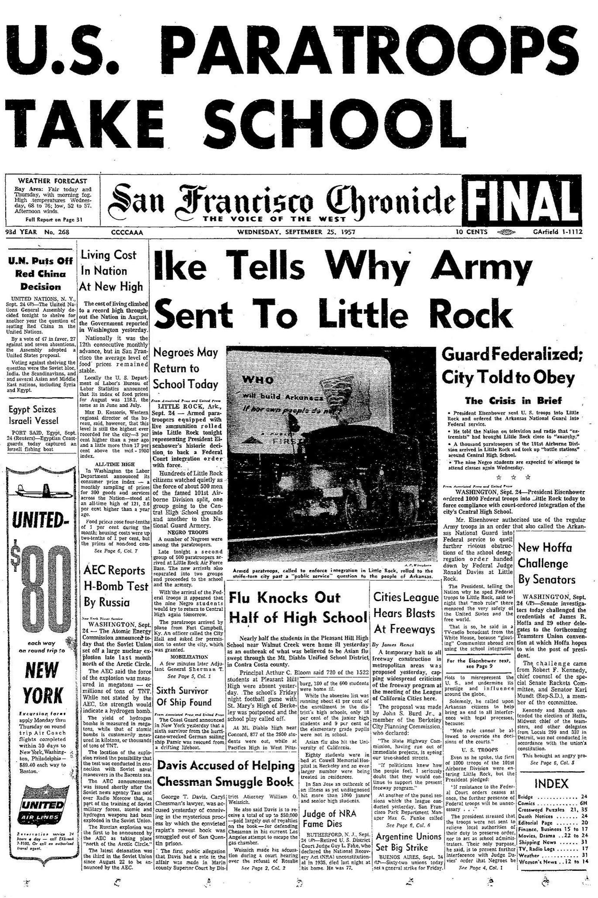
SF ChronicleNews Reference, 1957
KKK Scene
Unreal Environment — Cinematic Renders
Lynching has been used as an act of brutality against African Americans and continues today through white supremacist groups such as the Ku Klux Klan.
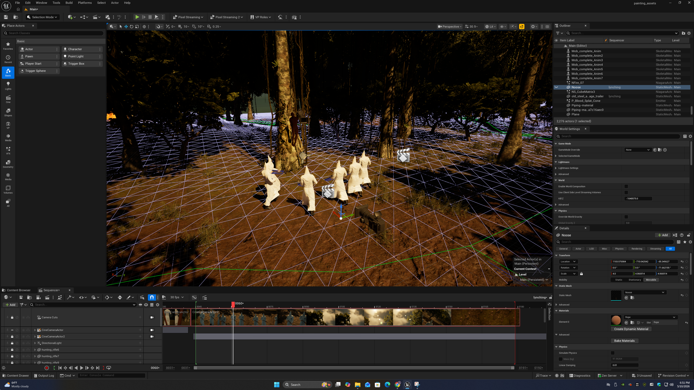
Cinematic Render 01
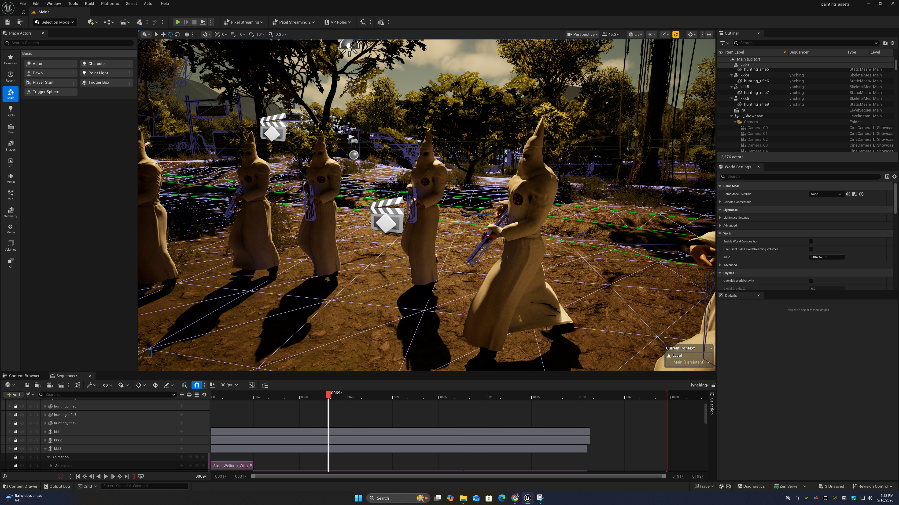
Cinematic Render 02
Trayvon Martin
Unreal Environment — Illustrator 3D Text
Within this scene, the number 17 is spoken in the audio. I decided to represent that number with a birthday cake and candles for Trayvon Martin, a 17-year-old who was fatally shot by George Zimmerman on February 26, 2012, in Sanford, Florida. Trayvon was walking to a convenience store to buy snacks when George Zimmerman called the police and reported him as a suspicious person. Against the instruction of the police, Zimmerman followed Trayvon and proceeded to shoot and kill him. The state charged him with second-degree murder, but he claimed self-defense under an unjust stand-your-ground law.
A jury acquitted Trayvon's killer. His murder led to societal debates surrounding his wearing of a hoodie, unraveling the prejudices around Black people being perceived as "thugs" for wearing that clothing item. Within the scene, the hoodie is present as he bends over to blow out the candles.
Adobe Illustrator — 3D Text Extrusion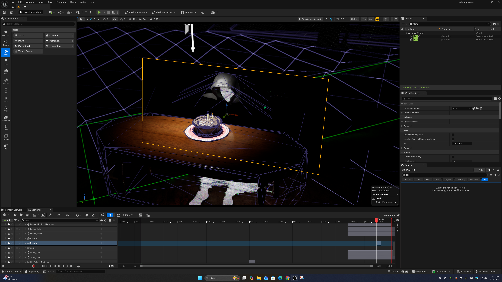
Redlining
Unreal Environment — Systemic Racism
Cinematic Render 01
Cinematic Render 02 — Pre-Render Viewport
Redlining is a historical, systemic practice where banks and federal agencies outlined minority-dense (typically African American) neighborhoods in red, denying them loans and mortgages. The Home Owners' Loan Corporation (HOLC) mapped cities, color-coding neighborhoods from green, the best, to red, dangerous. Red areas primarily contained minority residents and were deemed too risky for federally backed mortgages. Even if individuals qualified financially, their location disqualified them, forcing residents into exploitative "contract" buying with no equity. This prevented generations of Black and Brown families from buying homes, directly hindering their ability to build generational wealth, an effect still reflected in modern-day America.